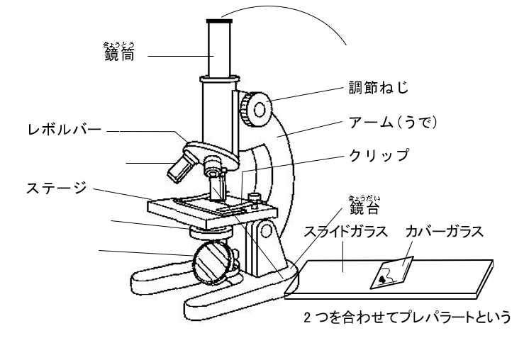

| 人物 | 国・年 | 内 容 |
|---|---|---|
| イギリス 1665年 |
自作の顕微鏡でコルク片を観察し，細胞壁を発見。「cell（細胞）」と命名した。 | |
| ドイツ 1838年 |
植物の組織はすべて細胞からできていると主張した。 | |
| ドイツ 1839年 |
動物も細胞からできていることを確認し，「すべての生物は細胞からできている」という細胞説を提唱した。 | |
| ドイツ 1858年 |
自然発生説を否定し，「すべての細胞は細胞から生じる」として細胞説を完成させた。 |
